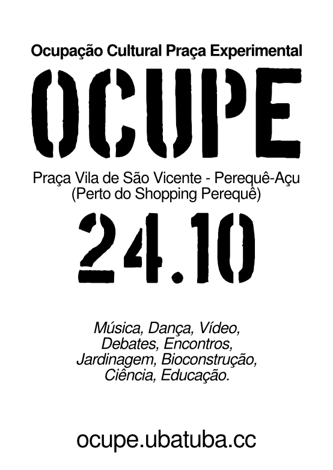
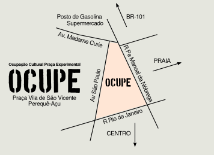

Ocupação Cultural Praça Experimental
Sábado, 24/10/2015 - Praça Vila de São Vicente (Perequê-Açu)
Para marcar o último dia de atividades gratuitas e abertas ao grande público (24/10), estamos organizando a OCUPE - Ocupação Cultural Praça Experimental, que promoverá o diálogo entre cultura, ciência e espaço público. Trata-se de uma proposta de intervenção urbana através da qual a praça Vila de São Vicente (mapa), no Perequê-Açu, será transformada por um dia em espaço multifacetado dedicado à arte, à educação, à experimentação e à convivência social.
OCUPE conta com apoio da Fundart, Espaço Convívio das Artes, Kantuck, Espaço Antera, Lab Experimental e Gaivota FM.
Preparativos e recomendações
Vamos para a praça! Começaremos por volta das 14h. Preste atenção na lista do que recomendamos levar:
-
Cangas
-
Cadeiras de praia
-
Guarda-chuvas
-
Guarda-sois
-
Lonas
-
Cordas
-
Repelente
-
Violões
-
Tambores
-
Brinquedos
-
Alimentos
Teremos uma mesa coletiva de piquenique. A ideia é compartilhar: traga comidinhas para doar ao coletivo (de preferência saudáveis e frescas). Queremos também promover uma gincana colaborativa, percorrendo os estabelecimentos da região, falando sobre o evento e arrecadando mais produtos para a mesa.
Se chover, vamos mostrar que não somos de açúcar! Mas para facilitar um pouco e proteger equipamentos, contamos com o generoso apoio do Espaço Convívio das Artes, que fica em frente à praça. Caso não seja possível realizar atividades na praça, algumas delas serão movidas para dentro do espaço - em especial as oficinas, debates e sessões de vídeo.
Pretendemos encerrar as atividades entre 21h e 22h. Para isso acontecer, precisamos começar um esforço de organização, fechamento e limpeza da praça a partir das 20h.
Planos para o dia
Todos os planos abaixo podem e serão modificados durante a ocupação. Procure o mural da praça para consultar o mapa de espaços e a agenda corrente de atividades.
Agendados
-
14h Arduinoise - Criação de instrumentos musicais com Arduino e eletrônicos acessíveis, com Caleb Mascarenhas
-
14h-16h Oficina Inspirador: dá pra fazer produção cultural de outro jeito - INSCREVA-SE para garantir sua vaga (são somente vinte)
-
16h Debate espaço público
-
Arte Bicicleta Mobilidade - Fabs Balvedi (PR)
-
Tropixel OCUPE - Felipe Fonseca
-
-
17h-19h Oficina mapeamento afetivo, com Jonaya Castro
-
18h00 Apresentação Grito de Maria
-
19h00 Flamenco
-
19h30 Mostra vídeos organizada por Karla Brunet
-
20h30 Encontro Marcado - Kantuck
Continuados/ideias soltas
-
Lambe OCUPE nos postes do entorno da praça (FF leva impressora)
-
Oficina Spirograffe com Julien Bellanger
-
Modificações na infraestrutura da praça:
-
Acesso a carrinhos/cadeirantes
-
Jogo de amarelinha
-
Refazer a placa da praça
-
Bancos de praça - como melhorar?
-
-
Intervenções sustentáveis
-
Brinquedos/playground para crianças
-
Oficina de agricultura urbana
-
Plantio de árvores frutíferas e nativas (e citronela ;)
-
Oficina de bombas de sementes
-
-
-
Mural da praça
Configurada como laboratório experimental participativo, OCUPE sediará oficinas, apresentações, debates, mostras e intervenções selecionadas através de convocatória aberta. Vai refletir o tema “outros desenvolvimentos”, temática geral desta edição do Festival Tropixel. Insere-se em um histórico ímpar de ocupações culturais do espaço público em Ubatuba, e pretende estabelecer tanto uma estratégia descentralizada de intervenções artístico-científicas em outras praças da cidade quanto um plano de ocupação periódica da praça como espaço cultural e coletivo.
A proposta de OCUPE retoma as atividades do primeiro Festival Tropixel, realizado em 2013, quando ação semelhante foi desenvolvida no Terminal Turístico do Perequê-Açu, que foi convertido em centro cultural durante um dia.
Convocatória
OCUPE recebeu propostas de participação através de uma convocatória pela internet. O rascunho da programação final está na wiki.